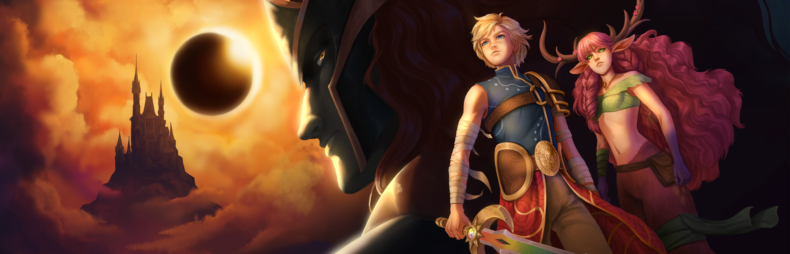
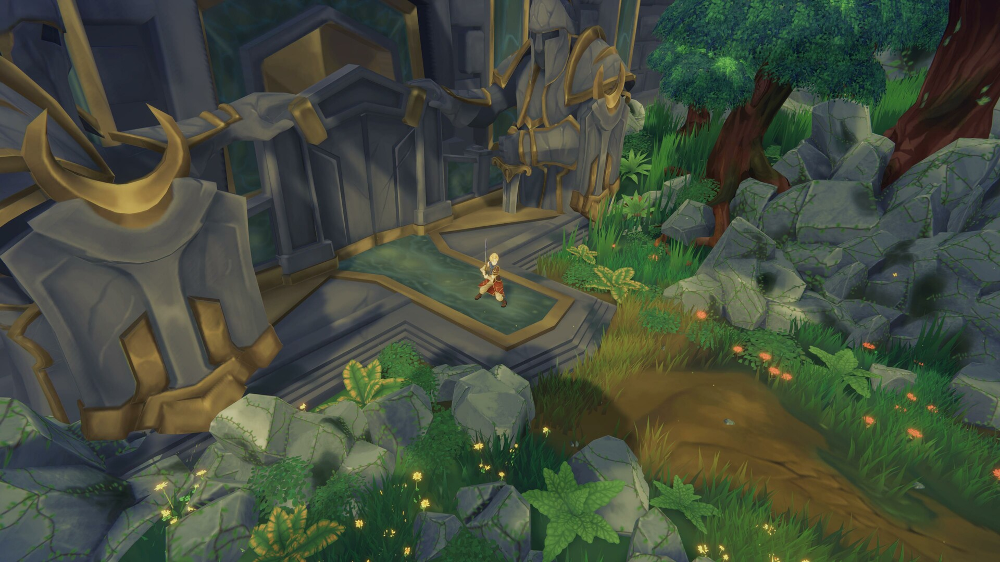
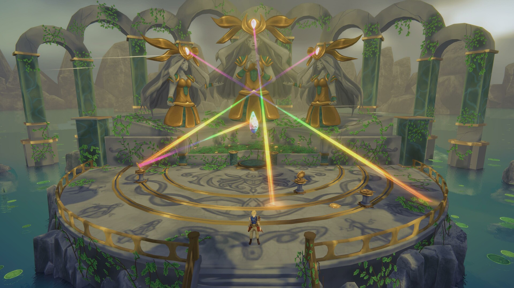
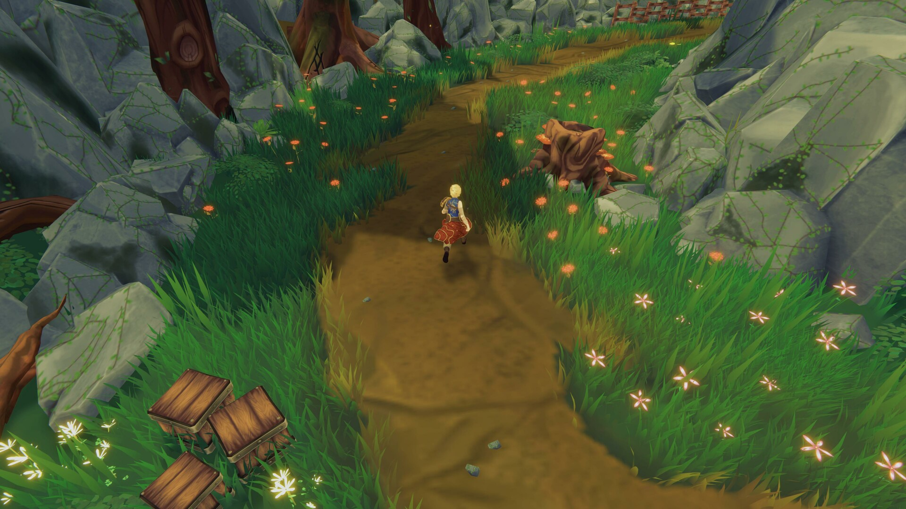
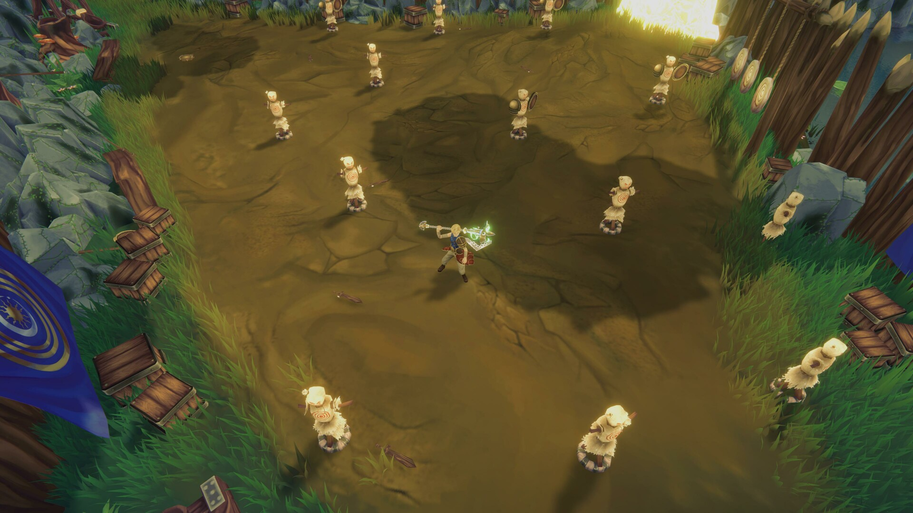
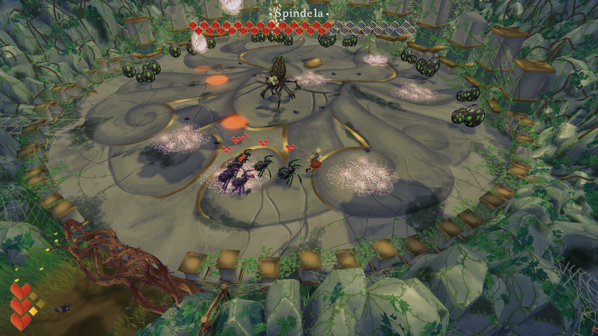

Eleito pelo público na Brasil Game Show, maior evento de jogos da América Latina






Eclipse: Shine of Dawn é um jogo de ação e aventura hack 'n' slash com foco em combate fluido e exploração. Desenvolvido para PC pela DeadPixel Studios, o projeto traz uma ambientação rica e desafiadora com mecânicas dinâmicas de batalha contra criaturas místicas.
Minhas Responsabilidades
Desenvolvimento da IA dos inimigos do zero junto à equipe, arquitetando e implementando comportamentos através de State Machine, NavMesh e IK.
Correção e polimento de bugs críticos e impeditivos no combate do primeiro boss.
Integração técnica de áudios e efeitos sonoros utilizando FMOD.
Colaboração direta e multidisciplinar com outros desenvolvedores, artistas, designers e producers no alinhamento de escopo, arte e mecânicas.
Apresentação oficial do jogo ao público junto à equipe na Brasil Game Show (BGS 2023), conquistando o prêmio de Melhor Jogo Indie do evento por voto popular pela IGN.
Participação em podcasts e criação de conteúdo para divulgação do projeto em mídias sociais.
Minha Experiência
Foi minha primeira experiência profissional e um grande marco no meu desenvolvimento como desenvolvedor. Por ser um codebase robusto e em equipe, aprendi imensamente lendo, estudando e participando de code reviews com meus colegas de trabalho. Além do grande salto técnico em sistemas e IA, foi muito gratificante poder contribuir não apenas na programação, mas também apresentar o jogo ao público na BGS e ajudar a construir a comunidade do projeto.